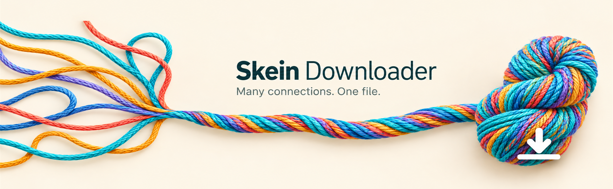
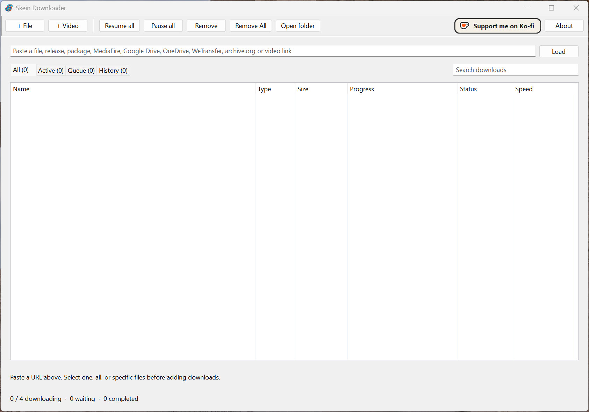
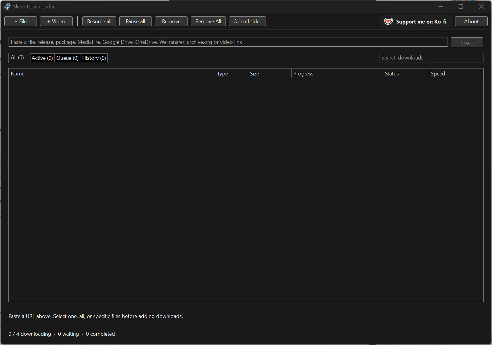
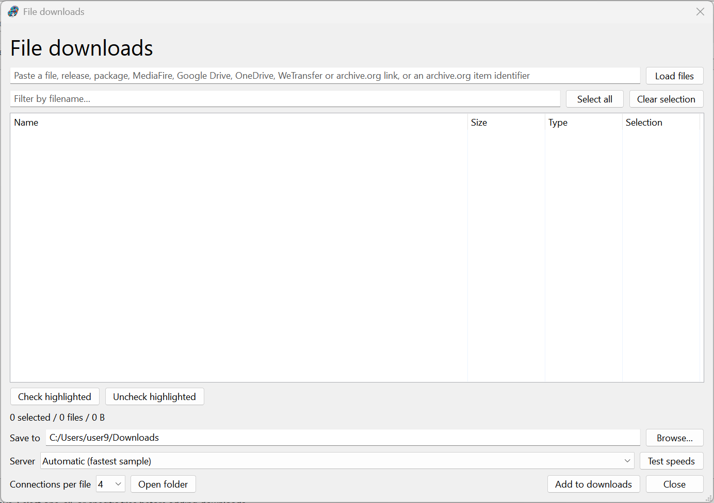
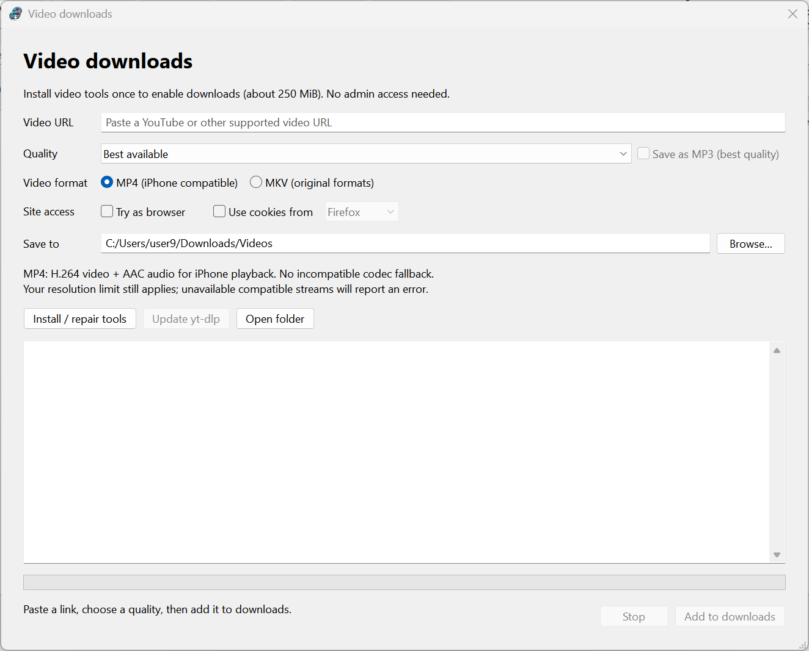
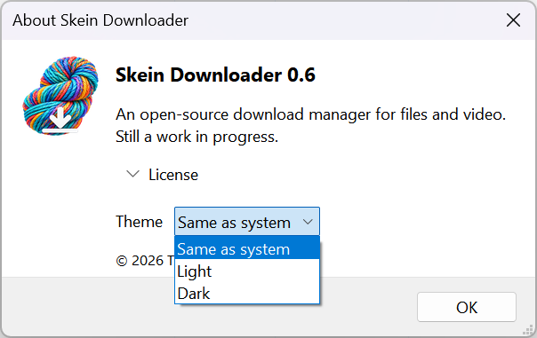

Installer
A familiar setup with Start menu integration. Installs for your user without administrator rights; internet access is needed for video tools.
Find the Windows installer ↗
Bring your downloads together. Multiple connections, a manageable queue, and file and video tools in one native desktop app.
Choose your downloadWork in progress — actively developed, with rough edges and more to come.
Install it on Windows, carry a portable copy, or use it on Linux. Flatpak is the recommended package for SteamOS. All four formats target 64-bit x86 systems; check the release listing for available builds.
A familiar setup with Start menu integration. Installs for your user without administrator rights; internet access is needed for video tools.
Find the Windows installer ↗Unzip and run. Keep the application wherever you prefer, and install the video tools from within Skein when you need them.
Find the portable ZIP ↗The package to choose for SteamOS, and for Linux distributions with Flatpak support. Video helpers are provided by the package and runtime.
Find the Flatpak ↗A regular Linux AppImage for Ubuntu 22.04 and newer. Make it executable and launch, with video tools included.
Find the AppImage ↗The Windows installer is not code-signed yet. Installation details and SHA-256 checksum information are in the README.
Run up to four downloads at once, pause and resume, and switch between active downloads, the queue, and history. Choose a native light or dark theme.


Load a direct link or browse files from supported sources, including Internet Archive, GitHub and GitLab releases, and Hugging Face repositories.

Download video through yt-dlp with quality selection, MP4 or MKV output, and a destination of your choice.
Install or repair the supporting tools from the video window. Browser-cookie access is opt-in and is never restored across launches.

Open About → Theme to follow the system, or choose Light or Dark. Windows applies the change after restarting Skein; Linux applies it immediately.

Skein is written in C++20 with wxWidgets and released under GPL-3.0-or-later. It is similar in purpose to Free Download Manager, but is an independent project, not affiliated with or endorsed by its makers.
Skein is a work in progress. Read the documentation, explore the source, or report a problem on GitHub. Include the application log when reporting an issue.
Missing support for a site you want? File an issue and ask for it. People who support me on Ko-fi get priority on their requests.
Explore the project ↗